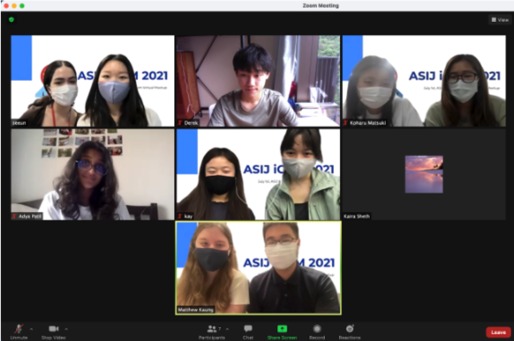

Through our collaboration with various Hong Kong iGEM teams, we were graciously invited to the HK regional jamboree hosted by the HKUST iGEM team to speak about our project and obtain valuable insights into other projects. From cancer detection to creating new clothing fiber, we were introduced to various other projects and learned a significant amount of techniques both for lab work and human practices. Through this opportunity, we were able to receive feedback on our presentation skills as well as improvements to our project concepts. Since it was our first time participating in a jamboree such as this, we had a lot of presentational improvements such as wordy slides and audience engagement. Another helpful aspect was during the question part of our presentation when we were presented with several possible challenges moving forward such as false positives and which algae we should use as a part of our detection kit. Fortunately, we were also given advice on how to navigate through these challenges and plan ahead. After the afternoon presentations, there was a mingling session for us to introduce ourselves and engage in informative discussions. Since the HKUST iGEM team had a project centered around shellfish, we were able to consult their experience in this area and share possible ideas. In addition, we received further contacts to deepen our human practices section. Overall, this experience was extremely beneficial and rewarding. This jamboree helped us focus and set goals for ourselves to reach based on the experience that other iGEM teams have encountered in the past. We greatly appreciate and thank the HKUST iGEM team for accepting and offering their generous hospitality to us.
(Team members at the HKUST IGEM jamboree)
Towards the end of the project, we were graciously invited to discuss our project with various teams across Northeast Asia. This allowed us to provide and request assistance in areas that we were struggling with. This network of high school teams prompted us with helpful feedback and aided us in proof-of-concept ideas and survey sharing possibilities. It was inspiring to see that many other high school teams, similar to us, had a passion in the field of synthetic biology and wanted to change the world for the better. From cancer detection to plastic degradation, we began to understand issues this world is facing in clarity, and increase our sense of community. Since this collaboration was primarily for high school students, we were introduced to scientific concepts that could help us improve our own project. For example, the Korea_HS team is also focused on AMPs, a collaboration that could prove useful when information is exchanged. Since this network was full of teams throughout Northeast Asia, we will also help each other promote the integrated human practices section of different teams. We were initially struggling to provide a medium for which our consumer surveys would launch, yet with the help of these teams, we have an extended project scope, not just centered around Hong Kong, but also across Asia. This collaboration helped us extend our scope and receive helpful feedback to better focus our wet lab design. We greatly thank all teams for allowing this collaboration and network to thrive.
(Northeast Asia Join Collaboration Network Zoom meeting)
During our initial meetings with HKU professors, we were fortunate enough to have been offered generous feedback and continuous meeting opportunities to improve our project. As we were slowly referred to various professors within HKU, we formed a mentorship program between our team and the professors we met on a consistent basis. Over the course of this project, this network continued to grow and our mentors continued to provide us with valuable insight into the applicability of. Whenever we would have questions, they were quick to assist and explain the application of necessary changes. We have continuously relied upon them for their expertise and we greatly thank them for inspiring and educating us about the scientific portions of our project. Their insight has benefitted us greatly, we greatly appreciate their help. This mentorship is further elaborated in the partnership page.
(Team members meeting with HKU mentors)
Our collaboration with ASIJ was primarily an idea exchange between teams that were both planning similar project concepts. We went over our ideas for proof of concept and contributions bages, and shared insights into the pages. Since we both had software aspects to our contributions, it was interesting to see how we differed in the software tools we made for our projects.
(Team members meeting with ASIJ IGEM team)
Over the course of this project, collaborations with experienced teams were a key factor in the success and enjoyment of our project. We had a great time meeting and discussing the various aspects of our project. We sincerely thank all the teams and professors who assisted and provided us with feedback over our first iGEM project. We hope our collaboration will not end here and we can continue discussing and collaborating on a subject we are passionate about in the future. Best wishes to all teams!